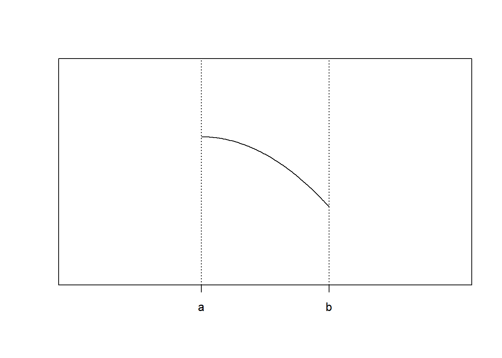
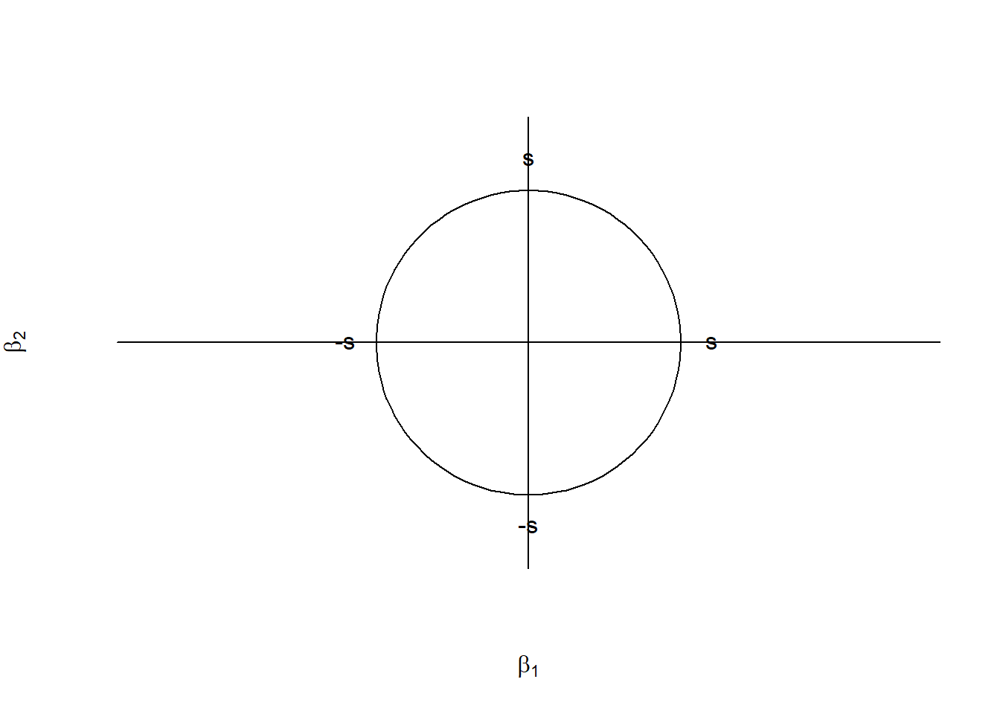

I am currently learning optimization (thanks to Dr. Ravi Varadhan and Dr. Vadim Zipunnikov). Here are some of my thoughts and notes.
If \(f(x) = 0\), where \(x \in \mathbb{R}^p\), \(f \in \mathbb{R}^k\), then
\(k=p\): determined properly
\(k>p\): overdetermined
\(k<p\): underdetermined (over parametrized)
Consider the series \(\{x_k\} \rightarrow x^{*}\)
For a scalar function \(f: \mathbb{R}^p \rightarrow \mathbb{R}\):
The gradient (first order derivatives) is the vector $f = (, ,) $.
The Hessian (second order derivatives) is the matrix \(\nabla^2 f = [\frac{\partial^2 f}{\partial x_i \partial x_j}]\).
For an equation systems \(F: \mathbb{R}^p \rightarrow \mathbb{R}^p\):
The Jacobian is the matrix \(J = [\frac{\partial F_i}{\partial x_j}]\).
\[f'(x) \approx \frac{f(x+h) - f(x)}{h} \approx \frac{f(x) - f(x-h)}{h}\]
\[f'(x) \approx \frac{f(x+h) - f(x-h)}{2h}\] Derivation based on Talor expansion of \(f(x+h)\) and \(f(x-h)\).
\[f'(x) = \frac{f(x+h) - f(x-h)}{2h} -\frac{h^2}{12}[f'''(\xi_1) + f'''(\xi_2)]\]
\[h = \sqrt{\epsilon} \max (|x|,\text{typical } x)\] where \(\epsilon\) is the machine constant.
\[f(x+ih) \approx f(x) + ihf'(x) \] \[Img(f(x+ih)) \approx hf'(x)\] \[f'(x) \approx \frac{1}{h}Img(f(x+ih))\]
\(f: \mathbb{R}\rightarrow \mathbb{R}\)
\[f(x) = f(x_c) + \int_{x_c}^{x}f'(u)du \approx f(x_c) + f'(x_c)(x-xc)\]
The Newton’s estimation is
\[x_{k+1} = x_{k} - \frac{f(x_k)}{f'(x_k)}\]
\(F: \mathbb{R}^p\rightarrow \mathbb{R}^p\), and the Jacobian \(J = \frac{\partial F_i(x)}{\partial x_j}\)
\[F(x_c + p) = F(x_c) + \int_{x_c}^{x}J(t)dt \approx F(x_c) + J(x_c)p\] The Newton’s estimation is
\[x_{k+1} = x_{k} - F(x_c)J^{-1}(x_c)\]
The goal is to not calculate \(J\) for all the iterations, instead using the Broydan’s rank 1 update \(x_{k+1} = x_{k} - F(x_c)B_c^{-1}\).
\[B_{k+1} = B_k + \frac{(y - B_k s)s^T}{s^Ts}\] where \(y = F(x_{k+1}) - F(x_k)\), and step \(s = x_{k+1} - x_k\). Eventually, the inverse can be done using the Sherman-Morrison formula.
For \(f: \mathbb{R}^p \rightarrow \mathbb{R}\), where \(f\) is twice differentiable with Llipschitz condition \(||\nabla^2f(x) - \nabla^2f(y)||\leq \gamma ||x-y||\), and also \(\nabla f(x^*) = 0\), and \(\nabla^2 f(x^*)\) is positive definite, the Newtown’s method
\[\nabla^2 f(x_k) (x_{k+1}-x_k) = -\nabla f(x_k)\] can be solved by the Cholesky decomposition \(\nabla^2 f(x_k) = LL^T\), where \(L\) is a lower triangular matrix by \[LL^T S_k = -\nabla f(x_k)\]
For a scalar function \(f: \mathbb{R}^p \rightarrow \mathbb{R}\), with gradient \(\nabla f\), the gradient descent (a.k.a. steepest descent) algorithm is
\[x_{k+1} = x_k - \lambda \nabla f(x_k)\]
Gradient descent is based on the observation that if the multi-variable function \(f(x)\) is defined and differentiable in a neighborhood of a point \(x_c\), then \(f(x)\) decreases fastest if one goes from \(x_c\) in the direction of the negative gradient of \(f\) at \(x_c\), \(\nabla f(x_c)\).
The line search approach first finds a descent direction along which the objective function \(f\) f will be reduced and then computes a step size that determines how far \(x\) should move along that direction, i.e. \(\lambda\) varies.
For gradient descent algorithm
\[\lim _{k \rightarrow \infty} \frac{|x_{k+1} - x^*|}{|x_k - x^*|} \leq \frac{\lambda_{max} - \lambda_{min}}{\lambda_{max} - \lambda_{min}}\]
where \(\lambda_{max}\) and \(\lambda_{min}\) are the largest and smallest eigenvalues of the Hessian \(\nabla ^2 f(x)\) where \(x\) is closed to \(x^*\). If \(\lambda_{max} >> \lambda_{min}\), the \(\frac{\lambda_{max} - \lambda_{min}}{\lambda_{max} - \lambda_{min}} \approx 1\), i.e. gradient descent becomes sublinear, and inefficient.
A combination of Newton’s method and gradient descent can be formed in a format of a penalized ridge regression
\[(\nabla^2 f(x_k)+\lambda I)S_k = -\nabla f(x)\] where \(\lambda\) can be \(\{\lambda_k\}\rightarrow 0\), e.g. \(\lambda = \lambda/10\).
\[\text{min}_{x \in \Omega \subseteq \mathbb{R}^p} f(x)\] where \(\Omega\) is called the feasible set.
Box constraints: \(l_i \leq x_i \leq u_i\)
We can try to find a transformation \(y= T(x)\). E.g. Take \(t_i = 2 \frac{x_i - l_i}{u_i - l_i} - 1\), and then \(y_i = \log (\frac{1+t_i}{1-t_i})\). And we see that \(\Omega_y = \mathbb{R}^p\). But has to be careful that eht solution is not closed to the boundary. Another way is to do the projection. \(\text{Proj}(x_i) = \text{median}(l_i, u_i, x_i)\)
Linear equality constraints: \(\Omega = \{x|Ax = b\}\)
Linear inequality constraints:\(\Omega = \{x|Ax - b \leq 0\}\)
Nonlinear equality or inequality \(h_j(x) = 0\) or \(g_j(x)\leq 0\)
\(\text{min} f(x)\) such that \(Ax = b\).
The lagrangian is \(L(x) = f(x)+ \lambda^T()Ax-b)\), and we want \(\nabla L(x) = \nabla f(x) +A^T \lambda = 0\).
The first order optimality condition is (\(S_k\) is the current step):
\[\begin{cases} \nabla f(x) +A^T \lambda = 0 \\ AS_k = 0 \end{cases}\]
And we also have
\[\begin{cases} \nabla f(x+S_k) = \nabla f(x) + \nabla^2 f(x)S_k \\ \nabla f(x+S_k) +A^T \lambda = 0\end{cases}\]
Eventually, we have the KKT condition which is
\[\begin{cases} \nabla f(x) + \nabla^2 f(x)S_k +A^T \lambda = 0\\ AS_k = 0\end{cases}\] with the matrix form
\[\begin{pmatrix} \nabla^2 f & A^T \\ A & 0 \end{pmatrix} \begin{pmatrix} S_k \\ \lambda\end{pmatrix} = \begin{pmatrix} -\nabla f \\ 0 \end{pmatrix}\]
Solve this to find \(\lambda\) and \(S_k\).

Apparently, \(f(b)\) is the minimum, but \(f'(b) = 0\) fails. Instead, we should check
\[f''(x^*) (x^* -a)(b - x^*) \geq 0\]
\[[\nabla^2_{\text{R}}f(x)]_{ij} = \begin{cases} \delta_{ij} & \text{ if either i or j constrains is acive} \\ [\nabla^2 f(x)]_{ij} & \text{Otherwise} \end{cases} \]
so that \[\nabla^2_{\text{R}}f(x) = \begin{pmatrix} \nabla^2 f(x) & 0 \\ 0 & I \end{pmatrix}\]
is PSD.
Consider the data generating model that generates \(x = \{y, z \}\), where \(x\) is the full data, \(y\) is the observed data, and \(z\) is the latent data/missing values, and parameters \(\theta\)
Observed density: \[p(y | \theta) = \int_{x}p(x|\theta)dx = \int_zp(x|\theta) p(z|y, \theta) dz\]
This is often intractbale. Therefore, we consider EM. The complete data likelihood is $L_c() =p(y,z|) $.
E Step: Calculate the expected value of the complete log likelihood with respect to the conditional distribution of \(z\) given \(y\), under the \(\theta^{(k)}\) from the current iteration \(k\).
\[ Q(\theta|\theta^{(k)}) = E_{z|y,\theta^{(k)}}(\log L(\theta; y,z)) = \int \log p(y,z|\theta) p(z|y,\theta^{(k)})dz\]
M Step: Find the quantity that maximize the surrogate quantity \(Q(\theta | \theta^{(k)})\).
\[ \theta^{(k+1)} = \text{argmax}_\theta Q(\theta|\theta^{(k)})\]
Instead of finding \(\text{argmax}_\theta Q\), we can find any \(\theta\) that increase \(Q\).
\(Q(\theta^{(k+1)}|\theta^{(k)})\geq Q(\theta^{(k)}|\theta^{(k)})\)
The ascent property of EM: for the observed data likelihood \(L(\theta^{(k+1)}) \geq L(\theta^{(k)})\)
We have n = 197 data that fall into the 4 categroies \(\mathbb{y} = (y_1, y_2, y_3, y_4) = c(125, 18,25,34)\), with propability \(\mathbf{p} = (\frac{1}{2}+\frac{\theta}{4}, \frac{1}{4}(1-\theta), \frac{1}{4}(1-\theta), \frac{\theta}{4})\), s.t. \(0 \leq \theta \leq 1\).
Apparently, we can solve it by MLE. But Let’s consider solving it using EM.
Notice that the first probability is separatable. Therefore, we can separete \(y = (x_1,x_2,x_3,x_4,x_5)\), such that \((x_3, x_4, x_5) = (y_2,y_3,y_4)\) are the observed data, and \(z = (x_1,x_2)\) are latent data. We have \(x_1+x_2 = y_1\) such that \(p(x_1) = \frac{1}{2}\), \(p(x_2) = \frac{\theta}{4}\).
The complete data likelihood is \(g(x|\theta) = \frac{n!}{\prod_i x_i !} (\frac{1}{2})^{x_1}(\frac{\theta}{4})^{x_2}(\frac{1}{4}(1-\theta))^{x_3+x_4} (\frac{\theta}{4})^{x_5}\)
And the CDLL (complete data log likelihood) is \[L_c = \log g(x|\theta) \propto (x_2 + x_5)\log \theta + (x_3+x_4)\log (1-\theta)\] The E step is \[E(L_c) \propto (E(x_2) + x_5)\log \theta + (x_3+x_4)\log (1-\theta)\] where \(E(x_2) = n \times \frac{\frac{\theta^{(k)}}{4}}{\frac{1}{2}+\frac{\theta^{(k)}}{4}}\), and then to maximize it in the M step.
Consider a mixture model with \(g\) univariate Gaussian components, with \(\mu = (\mu_1,\dots \mu_g)\), and common variance \(\sigma^2\).
The density is
\[f(y;\theta) = \sum_{j = 1}^{g}\pi_j f_j(y;\mu_j, \sigma^2)\] where \(\theta = (\pi_1,\dots, \pi_g,\mu_1,\dots, \mu_g, \sigma^2)\).
And the observed log likelihood is
\[L(\theta) = \sum_{i=1}^{n}\log (\sum_{j = 1}^g \pi_j f_j(y_j;\mu_j,\sigma^2))\] such that \(\sum_{j}\pi_ = 1\), \(\sigma^2 > 0\), and \(0 \leq \pi_j \leq 1\). If we directly maximize it, it becomes a constrained problem. But we can solve it using EM.
Consider the complete data to be \(x = c(y,z)\), where \(z\) is defined as
\[z_{ij} = \begin{cases}1 \quad \text{if } y_i \text{ comes from the ith component} \\ 0 \quad \text{otherwise}\end{cases}\] such that \(\pi_j = \frac{\sum_i z_{ij}}{n}\)
The complete data likelihood becomes
\[l_c(\theta) = \prod_i\prod_j \pi_j^{z_{ij}} f_j(y;\theta)^{z_{ij}}\] with the CDLL
\[L_c(\theta) = \sum_i\sum_j z_{ij}\log \pi_j + \sum_i\sum_j z_{ij}\log f_j (y_i;\theta)\]
The expected value is
\[E(z_{ij}|y, \theta^{(k)}) = p[z_{ij} = 1|y, \theta^{(k)}]\]
\[E(z_{ij}|y, \theta^{(k)}) = \frac{\pi_j^{(k)}f_j(y_i; \mu_j^{(k)}, \sigma^{2 (k)})}{\sum_j\pi_j^{(k)}f_j(y_i; \mu_j^{(k)}, \sigma^{2 (k)})} = z_{ij}^{(k)}\]
Plug \(z_{ij}^{(k)}\) to get the expected value of CDLL and gives the E step. Then do M step, to get
\[\pi_{j}^{(k+1)} = \frac{1}{n}\sum_{i}z_{ij}^{(k)}\]
\[\mu_j^{(k+1)} = \frac{\sum_i z_{ij}^{(k)}y_i}{\sum_{i}z_{ij}^{(k)}}\]
\[\sigma^{2(k+1)} = \frac{1}{n}\sum_i\sum_j z_{ij}^{(k)}(y_i - \mu_j^{(k)})^2\]
\[y = X\beta +\epsilon\] where \(y \in \mathbb{R}^{n}\), \(X\in \mathbb{R}^{n\times p}\), \(\beta \in \mathbb{R}^{p}\), \(n>p\), and \(\epsilon \sim N(0,\sigma^2 I)\). We know that the least square estimator is \[\hat{\beta}_{ls} = (X'X)^{-1}X'Y\]
Suppose the SVD of \(X\) is \(X = USV'\) such that \(U'U = V'V = I\), and \(S\) is diagonal matrix with ordered singular values on the main diagonal. Then
\[\hat{\beta}_{ls} = VS^{-1}U'y = \sum_{j = 1}^{p}v_j^{'}\frac{<u_j^{'}, y>}{s_j}\] which means that \(\hat{\beta}_{ls} \in L_{span}(v_1^{'},\cdots, v_p^{'})\).
And the predicted value \[\hat{y} = X(X'X)^{-1}X'Y = \sum_{j= 1}^{p} = u_j <u_j^{'},y>\] such that \(\hat{y}\in L_{span}(u_1^{'},\cdots, u_p^{'})\).
If \(n<p\), \(X'X\) is not full rank and so that is not invertible. But we can consider the generalized inverse \[X^{-} = VS^{-1}U'\] such that \(XX^{-}X = X\). \(\hat{\beta}_{ls} = (X'X)^{-}X'y = VS^{-1}U'y = X^{-}y\), which is not unique.
We need to consider other approaches for the estimation, e.g. ridge regression.
\[l(\beta) = ||y - X\beta||^2_2 +\lambda ||\beta||^2_2\] which is a convex function (both parts are convex), and
\[\text{minimize}_{\beta} ||y-X\beta||^2_2, \quad \text{ s.t. }||\beta||^2_2 \leq S\]
\[l(\beta) = (y-X\beta)'(y-X\beta)+\lambda \beta'\beta\] \[l'(\beta) = -2X'y + 2X'X\beta + 2\lambda \beta' = 0\] So that \[\hat{\beta}_{rd} = (X'X + \lambda I )^{-1}X'y = \sum_{j=1}^{p} = v_j^{'}\frac{s_j}{s_j+\lambda_j} <y,u_j^{'}>\]
If \(\lambda = 0\), then \(\hat{\beta}_{rd} = \hat{\beta}_{ls}\). And we will have
\[0 \leq \frac{||\hat{\beta}_{rd}||^2_2}{||\hat{\beta}_{ls}||^2_2}\leq 1\] where 0 is corresponding to \(\lambda \rightarrow \infty\), and 1 is corresponding to \(\lambda = 0\).

\[l(\beta) = ||y - X\beta||^2_2 +\lambda ||\beta||_1\] which is a convex function (both parts are convecx), and
\[\text{minimize}_{\beta} ||y-X\beta||^2_2, \quad \text{ s.t. }||\beta||_1 \leq S\]
\[l(\beta) = \frac{1}{2n}||y-X\beta||^2_2 +\lambda ||\beta||_1\]
\[\propto \frac{1}{n}\sum y'x_j\beta_j + \frac{1}{2}\sum_{j=1}^{p}\beta_j^2 +\sum_{j = 1}^p|\beta_j|\lambda\]
The problem becomes \[\text{min} l(\beta) = \text{min}_{\beta}\{ \frac{1}{2}\beta^2 -\alpha \beta + \lambda |\beta|\}\]
with \(\alpha = \frac{y'x_j}{n}\) which has the solution using the soft threshold operator
\[\beta^{*} = \text{sign}(\alpha)(|\alpha|-\lambda)_+ = S_{\lambda}(\alpha)\]
We can use the coordinate descent solution (which converges to global optimal)
\[\beta_j^{*} = S_\lambda (\frac{r_j^{'} x_j}{n})\] where \(r_{ij} = y_i - \sum_{k\neq j }x_{ik}\beta_k\).
\(f(\lambda): \mathbb{R}^p \rightarrow \mathbb{R}\) is convex if \(\forall x,y\in \mathbb{R}^p\), and \(\forall s \in [0,1]\), we have \[f(sx + (1-s)y) \leq sf(x) + (1-s)f(y)\] Or, the region within the function is also a convex set. (Remeber it as a cup with minimum).
\[f(x)\text{ is convex } \iff f(y)\geq f(x)+\nabla f(x)^T (y-x) \quad \forall x,y\in\mathbb{R}^p\]
\[\text{min}_x f(x)\] s..t \[g_j(x)\leq 0 \quad j = 1,\dots, m\] \[h_k(x) = 0 \quad k = 1,\dots, l\]
which can be formulated as the Lagrangian problem
\[L(x,\lambda,v) = f(x)+\sum_{j = 1}^{m}\lambda_j g_j(x)+\sum_{k=1}^{l}v_kh_k(x)\]
Suppose for the previous Lagrangian problem, there is a function \(g:\mathbb{R}^m \times \mathbb{R}^l \rightarrow \mathbb{R}\) Property 1. \(-g(\lambda, v)\) is convex
Property 2. If we define \(f^{*} = \text{inf}_{\text{feasible } x}f(x)\), then \(\forall \lambda \geq 0\) and \(\forall v\), \(g(\lambda, v)\leq f^{*}\).
Now all assume \(f\), \(g\), \(h\) are all differentiable and convex, then if \(x^{*}\) and \((\lambda^*, v^*)\) are primal and optimal, we have the following conditions
\(\nabla f(x^*)+\sum_{k}\lambda_j^*\nabla g_j(x^*)+\sum_k v_k^* \nabla h_k(x^*) =0\)
\(x^*\) is feasible, i.e. \(g_j(x^*)\leq 0\) and \(h_k(x^*)=0\)
\(\lambda_j \geq 0\)
\(\sum_j \lambda_j^* g_j(x^*) = 0\), then \(\forall j\), either \(\lambda_j^* = 0\) or \(g_j = 0\).